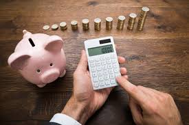
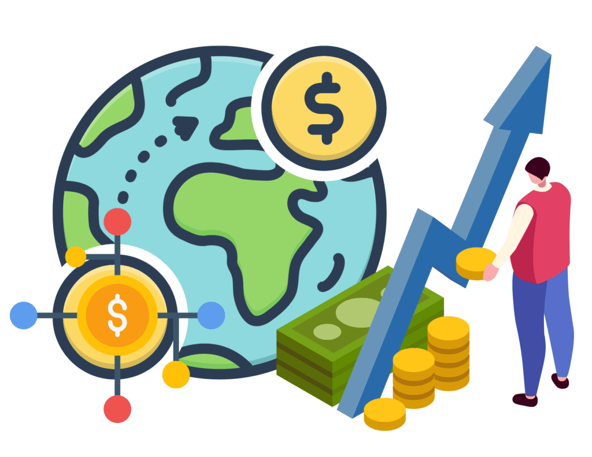
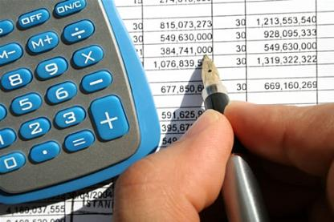
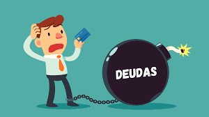

Conceptos
¿Qué es el dinero?
El dinero es un medio de intercambio socialmente aceptado que facilita la compra y venta de bienes y servicios al funcionar como una unidad de cuenta que mide el valor de todo y como un depósito de valor que permite transferir poder de compra al futuro. Sus propiedades clave, como la divisibilidad, durabilidad, portabilidad y una oferta controlada, le permiten cumplir estas funciones de manera eficiente, lo que lo convierte en una herramienta fundamental para el desarrollo económico y la organización de la sociedad, reemplazando la complejidad del trueque con un sistema simple y universal basado en la confianza en su valor.
¿Qué es un Presupuesto Personal?
Un presupuesto personal es un plan financiero detallado que te permite hacer un seguimiento de tus ingresos y gastos durante un período de tiempo determinado, generalmente un mes. Su objetivo principal es ayudarte a entender de dónde proviene tu dinero y a dónde va, dándote el control para tomar decisiones informadas sobre tus finanzas, como ahorrar para metas futuras, reducir deudas o ajustar tus hábitos de gasto. En esencia, es una herramienta clave para alcanzar la estabilidad financiera al alinear tus hábitos de consumo con tus objetivos económicos.

¿Qué es el Ahorro?
El ahorro es la porción de tus ingresos que no gastas en el presente, sino que la guardas para usarla en el futuro. No es solo lo que te sobra, sino una decisión consciente y proactiva de reservar una parte de tu dinero para alcanzar metas específicas, como un viaje, la compra de una casa, la educación o simplemente para crear un fondo de emergencia que te brinde seguridad financiera. El ahorro es la base para construir un patrimonio y lograr la libertad económica a largo plazo.

¿Qué es la Inversión?
La inversión es la acción de destinar tu dinero a una actividad o activo, como acciones, bonos, bienes raíces o un negocio, con la expectativa de que genere un rendimiento o gane valor con el tiempo. A diferencia del ahorro, que simplemente guarda el dinero, la inversión busca poner ese dinero a trabajar para que crezca, asumiendo un nivel de riesgo calculado con el objetivo de obtener ganancias futuras. Es una forma de construir riqueza a largo plazo y de hacer que tu dinero no solo mantenga su valor, sino que lo multiplique.

Hábitos Financieros Saludables
Presupuesto
Un presupuesto es un hábito financiero saludable porque te permite tomar el control total de tu dinero en lugar de que este te controle a ti. Al monitorear y planificar tus ingresos y gastos, un presupuesto actúa como una hoja de ruta que te guía hacia tus metas financieras, ya sea salir de deudas, crear un fondo de emergencia o ahorrar para un objetivo a largo plazo. Este simple acto de organización te da la claridad y la confianza necesarias para tomar decisiones financieras inteligentes, evitar gastos impulsivos y vivir con más tranquilidad. En esencia, un presupuesto convierte la incertidumbre financiera en un plan de acción concreto y empoderador.

Ahorro
El ahorro es un hábito financiero saludable porque te da la seguridad y la libertad para afrontar cualquier imprevisto de la vida sin tener que endeudarte. En lugar de vivir al día, ahorrar te permite construir un colchón de seguridad que te protege de emergencias como la pérdida de empleo o un gasto médico inesperado. Este simple acto de reservar una parte de tus ingresos te empodera, reduciendo el estrés financiero y dándote la tranquilidad para perseguir tus sueños, ya sea un viaje, la educación o una jubilación cómoda. El ahorro convierte la incertidumbre en una sensación de control sobre tu futuro.

Paga tus deudas a tiempo
Este es uno de los hábitos más importantes. Pagar las facturas, tarjetas de crédito y préstamos puntualmente no solo te ayuda a evitar cargos por mora, sino que también mejora tu historial crediticio. Un buen historial te abre puertas a mejores tasas de interés en futuros préstamos, lo que te ahorra miles de pesos a largo plazo.

Diversifica tus ingresos
No depender de una sola fuente de ingresos te da más seguridad y estabilidad. Puedes explorar opciones como trabajos freelance, un negocio secundario, o inversiones que generen ingresos pasivos. Este hábito reduce el riesgo y te da más libertad financiera.
Ahorro
El ahorro es la porción de tus ingresos que no se destina al consumo inmediato y se reserva para un uso futuro. Es una decisión consciente de posponer la gratificación actual para lograr una meta a largo plazo, crear un fondo de emergencia o simplemente acumular riqueza. No es lo que te sobra al final del mes, sino una cantidad que se separa al recibir tus ingresos, siguiendo el principio de "pagarse a uno mismo primero".
Fondo de emergencia
Es el más importante y prioritario. Consiste en construir un fondo para cubrir gastos inesperados, como la pérdida de empleo, una emergencia médica o reparaciones del hogar o del auto. Lo ideal es tener ahorrados entre 3 y 6 meses de tus gastos básicos. Este ahorro debe ser de fácil acceso (en una cuenta bancaria a la vista).
Beneficios del Ahorro
- Seguridad Financiera: Tener un fondo de ahorro te brinda tranquilidad al saber que estás preparado para cualquier imprevisto sin tener que recurrir a deudas.
- Logro de Metas: El ahorro es el camino directo para hacer realidad tus sueños, desde viajar hasta comprar un auto.
- Reducción del Estrés: Un colchón financiero reduce la ansiedad y la preocupación por el dinero, permitiéndote vivir una vida más relajada.
- Disciplina y Hábitos Saludables: El acto de ahorrar de manera constante fortalece tu autodisciplina, un hábito que se puede aplicar a otras áreas de tu vida.
- Oportunidad de Inversión: El ahorro es el paso previo a la inversión. Al acumular un capital, puedes empezar a invertir para que tu dinero trabaje para ti.
Desventajas del Ahorro
- Pérdida de Poder Adquisitivo por Inflación: Si el dinero se guarda en una cuenta que no genera intereses (o muy pocos), la inflación puede reducir su valor con el tiempo. Por ejemplo, si la inflación es del 5%, el dinero que ahorraste hoy tendrá un 5% menos de poder de compra en un año.
- Costo de Oportunidad: Al decidir ahorrar, estás renunciando a gastar ese dinero en algo más. La oportunidad perdida de disfrutar de un bien o servicio es el "costo de oportunidad".
- Tasa de Interés Baja: Las cuentas de ahorro tradicionales a menudo ofrecen tasas de interés muy bajas, lo que no ayuda a que tu dinero crezca significativamente. Esto es lo que lleva a muchas personas a considerar la inversión como una opción complementaria.
- Tentación de Gastar: La facilidad de acceso al dinero ahorrado puede ser una tentación para utilizarlo en compras impulsivas o no esenciales.
Tipos de Decisiones Financieras
Decisiones de consumo
Son las elecciones diarias sobre cómo gastamos nuestro dinero. ¿Comprar un café caro o prepararlo en casa? ¿Salir a comer o cocinar? Estas pequeñas decisiones, sumadas, tienen un gran impacto en nuestro presupuesto. Una buena decisión de consumo implica diferenciar entre necesidades y deseos.
Decisiones de ahorro
Se refieren a la elección de reservar una porción de nuestros ingresos en lugar de gastarla. Esto incluye decidir cuánto, con qué frecuencia y en qué tipo de cuenta ahorrar. La decisión más inteligente aquí es automatizar el ahorro, destinando una parte de tus ingresos a una cuenta separada tan pronto como los recibas.
Decisiones de inversión
Implican el uso de ahorros para adquirir activos que generen un retorno. Esto puede incluir la compra de acciones, bonos, bienes raíces o iniciar un negocio. Una buena decisión de inversión considera el riesgo, el retorno esperado y el horizonte temporal.
Decisiones de endeudamiento
Implican la elección de utilizar crédito o préstamos para financiar compras o inversiones. Esto incluye decidir cuándo es apropiado endeudarse, cuánto pedir prestado y cómo planificar el pago de la deuda. Una buena decisión de endeudamiento considera la tasa de interés, el plazo del préstamo y la capacidad de pago.